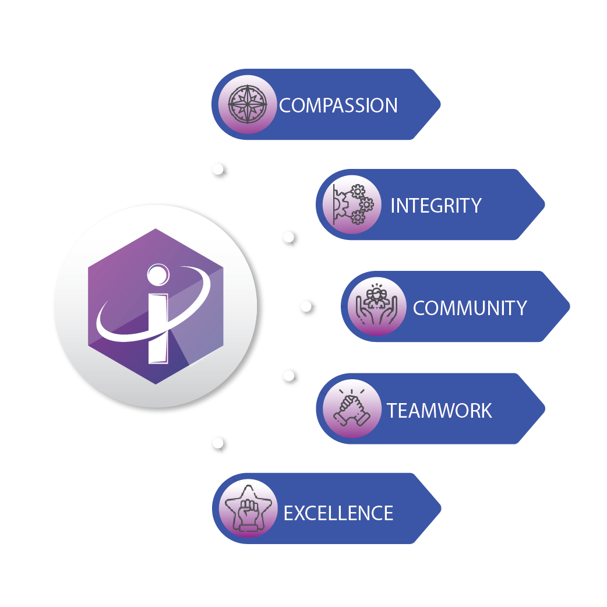

|
 |
wel come to iskillers
The world around us is changing every minute, globalizing, and the speed of
information exchange
and its volume are steadily increasing. A person who wants
to keep up with the times, understand
the new global trends in the development of
science and technology, must have curiosity, be
active and have analytical thinking
and leadership qualities. But in addition, in order to be
competitive he needs to
have a huge amount of knowledge and skills, including professional ones.
The high pace of scientific and technological progress and the wide spread of
information
technologies leads to the fact that any area of activity is constantly
enriched with new
discoveries, methods and techniques of work. We offer only
programs that will help you climb a
few steps higher in your life. All training
courses in which we work are in demand and relevant.
We use only the latest
proven and reliable methods of trainings. We do not have boring lectures.
Our
trainers use an interactive approach that significantly improves the efficiency of
training
and know all modern training methods. New knowledge is an
empowerment of you and a chance to
make your life better, brighter and more
diverse.
|
|